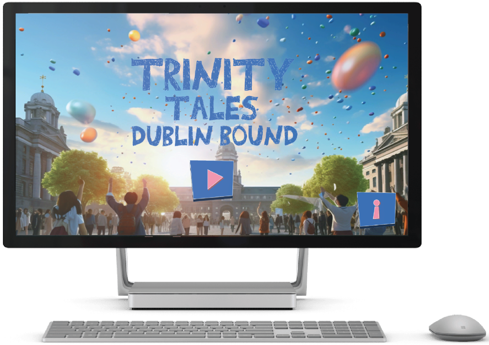
Trinity Tales
Trinity Tales is a three-month collegiate project, collaboratively developed by a team of five, as a final project for Trinity College Dublin. Our task was to develop something based on core shared interests and create a final product that would be ready to present. We gamified an onboarding process for international students to help them transition smoothly to life at Trinity.
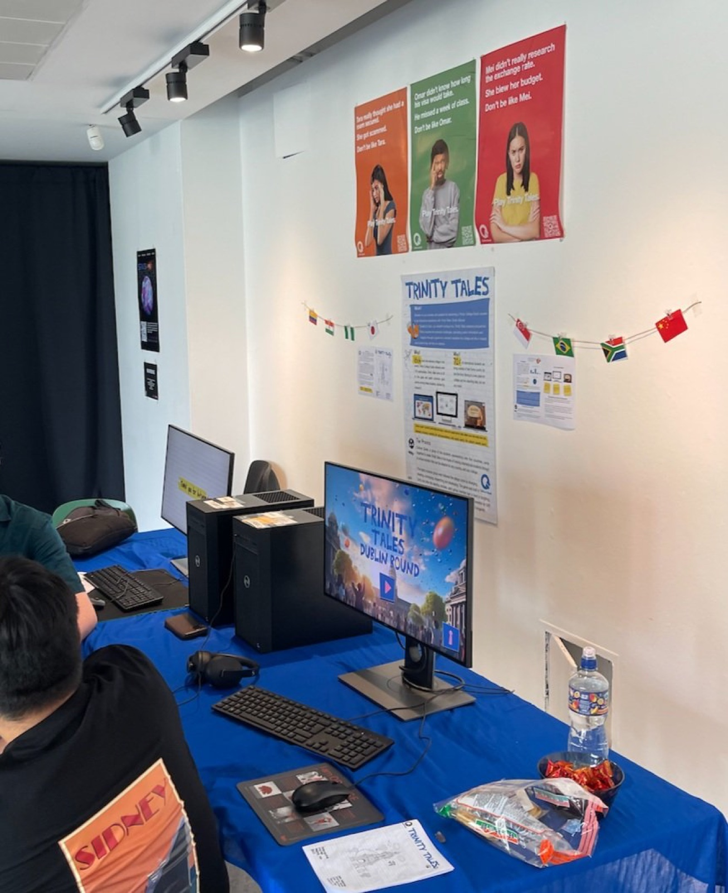
Background
What are we interested in making?
Our team of five had a slow start. We weren't sure what to develop or what direction to go in, but we were grouped together due to some of our mutual interests. To get the ball rolling, I took initiative in leading some of the brainstorming process. The Dot Voting method was used for diverging and converging ideas. Each person was told to anonymously contribute 2–3 ideas with a brief description. Then each person would be allowed 3 anonymous votes.
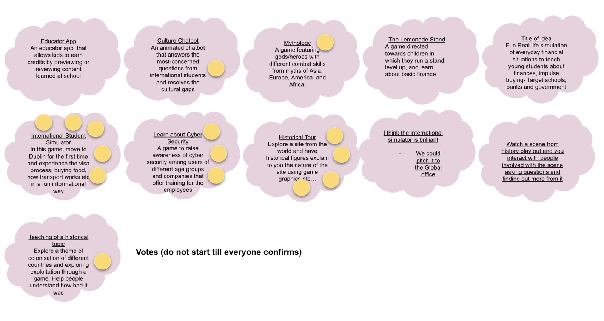
Ideate
The idea…
Bringing together our shared interest for education and games, we agreed we could make something like an "international student simulator." The majority of our group (and class) consisted of international students, and having this shared experience we know how difficult it is to be new in Dublin, and at Trinity College. We could develop a kind of simulation game that deals with a variety of topics which would benefit international students in making their transition to Dublin and Trinity College smoother.
With such a solid use case and target user in mind, the next step is research, research, and research. What are the real pain points of the target group?
After successfully and democratically choosing the idea, the next step was to elaborate on it by conducting in-depth research and developing the early stages. We designed an online survey to collect a mix of primary qualitative and quantitative data. This would help identify some main pain points that students deal with when they are new to Dublin and college.
Define
Survey says…
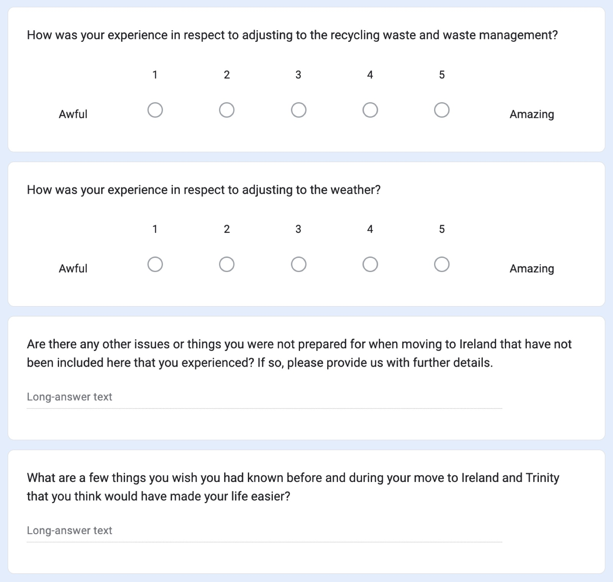
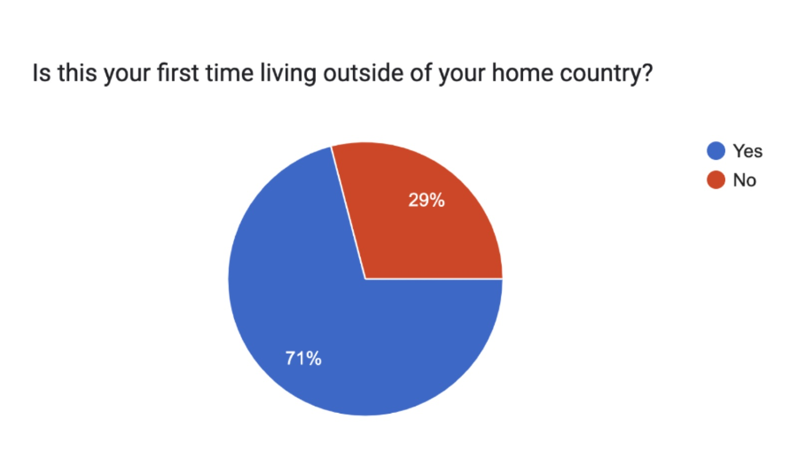
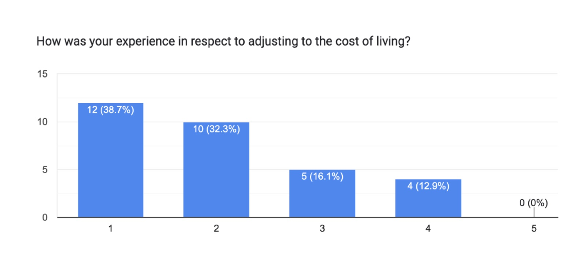
The survey asked general questions in which participants were asked to rate their experience from 1 (awful) to 5 (amazing) — for instance, how was your experience finding housing? The second half of the survey detailed open-ended questions such as "what is something you wish you had known before moving to Dublin?" This survey was circulated through several channels and reached a variety of students, including from our own class. With a sample size of 50, we were then able to synthesize the results into findings that would inform the content of the game.
With the results in hand and a catchy name for the project, it was possible to hone in on the purpose of the game and engineer a problem statement: what is Trinity Tales?
Trinity Tales is an interactive narrative tool and game designed and developed to inform, guide, and support incoming students planning to pursue their studies at Trinity College Dublin.
The game allows for self-paced, learning-by-doing, immersive experiences that offer international students up-to-date information for their Trinity onboarding experience.
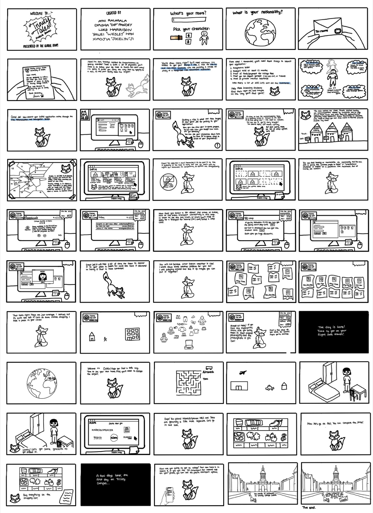
After synthesizing and processing the results of the research, we narrowed down the game's content and chapters. Due to a severe time restraint, the game would not be able to cover all the topics and pain points mentioned by the users, so we chose a select few. It was also decided that the game should have a guide or narrator throughout — inspired by a real fox that lives on campus at Trinity College Dublin, named Sam, who would be anthropomorphized to suit the game.
It was actually the idea that I contributed in the anonymous diverging stage which was chosen, so as I had a clearer vision of the general look and feel of the game, we divided tasks and I went off to storyboard the whole game. This was then presented to the rest of the group and after some tweaking, we consulted with an expert: our project supervisor put us in touch with a PhD student specializing in game design.
Create
Expert consultation
We presented the concept and storyboard to receive some feedback. I made a few quick mockups of the gameplay to supplement the rough sketches. Each group member also referenced a few existing games on the market to paint a better picture of the look, feel, and mechanics. We received feedback that it was an unusual topic for a game but could prove to be helpful for new students.
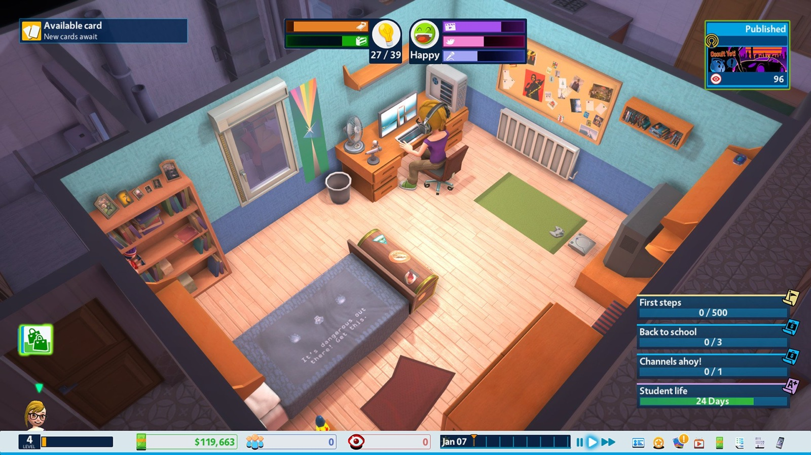
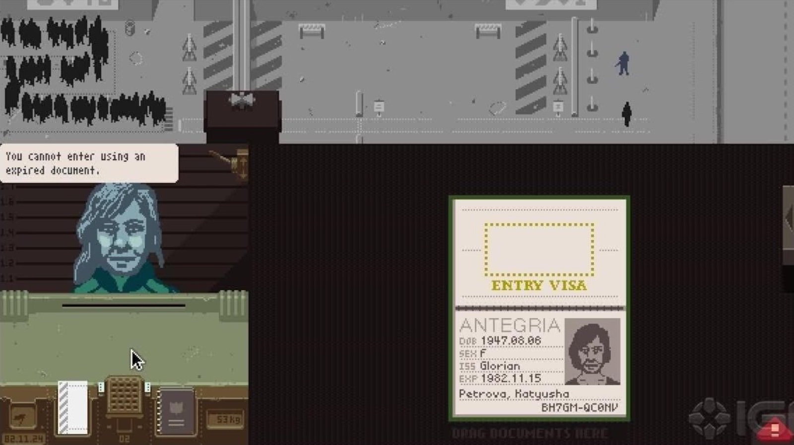
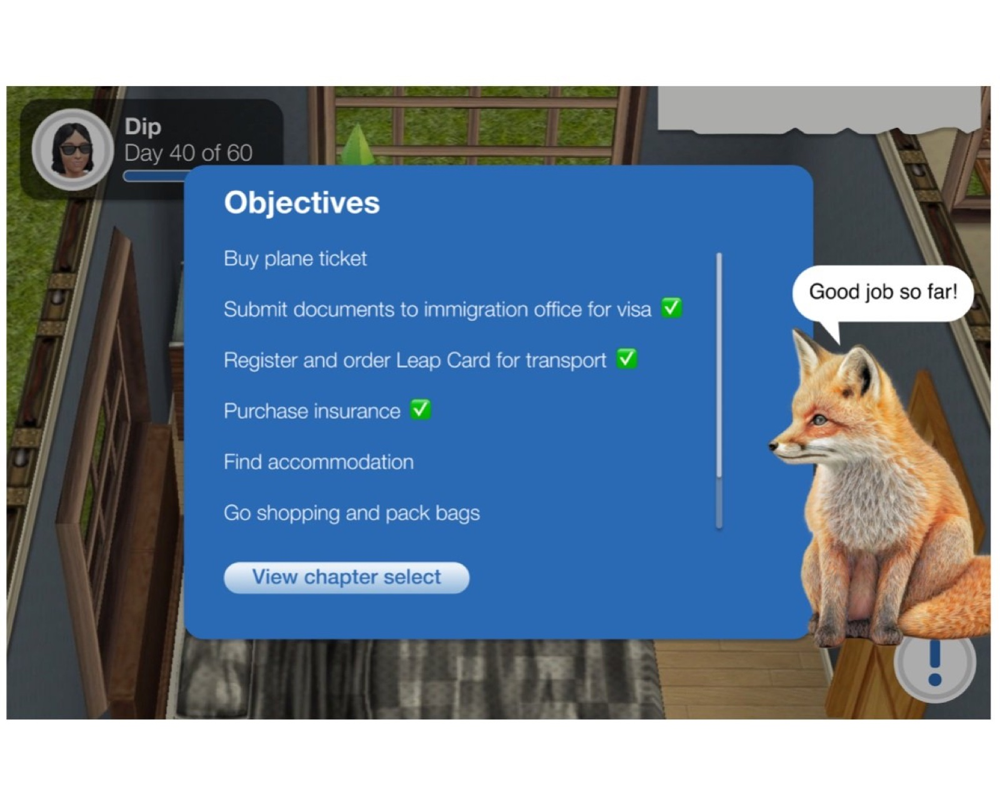
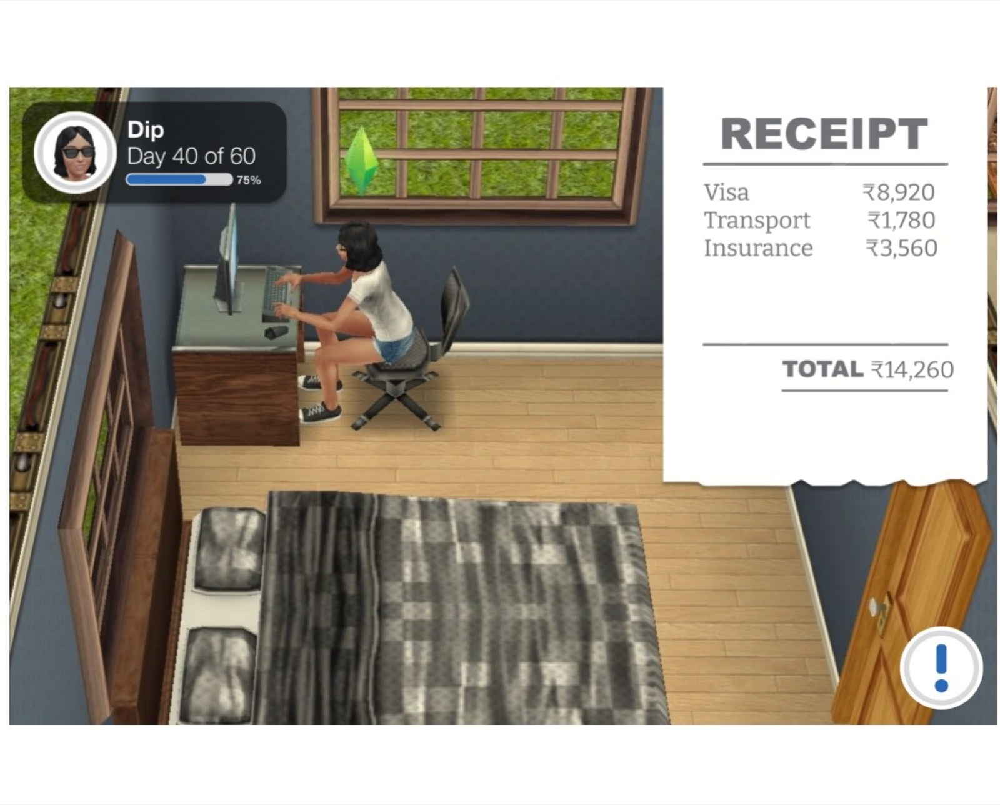
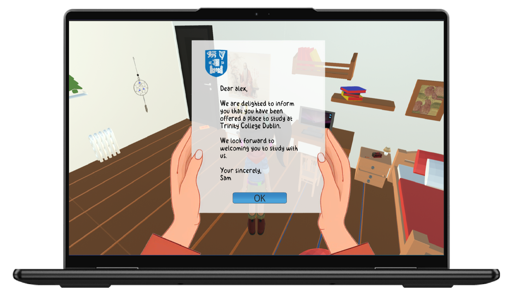
Software
With none of us having any prior experience developing games, we sought out advice for which would be the best platform to use to develop the game. Unity was recommended to us instead of Unreal Engine or any of the other programs. We were warned that as complete beginners to Unity, we had a tough path ahead, and given advice that we should find a way to mix 2D and 3D gameplay into the game. 3D scenes would be impressive and prove our skills, but it would be too time consuming for the entire game to be made in 3D. The 2D scenes would also take quite some time, but when it came to sourcing and working with assets, it would be much easier — so intertwining the two would be best.
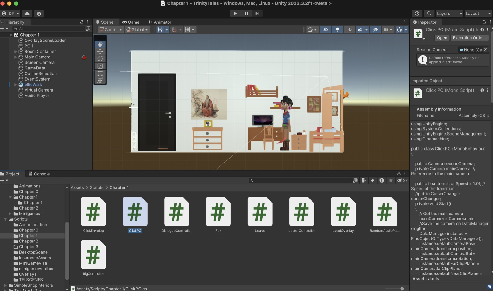
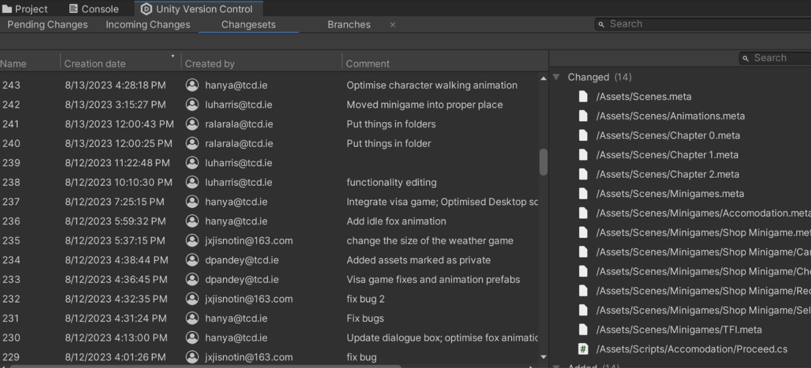
Unity in learning Unity
Shockingly, there was quite a bit of red tape we had to overcome to really make progress in this project. With no game design experience and no knowledge of how to use Unity, with just a few weeks ahead things were looking bleak. The group leader and I pushed for the college to arrange Unity workshops and eventually they did. The brief sessions helped us get back on our feet. We also had to fight for a budget to spend on this project — assets, subscriptions, Unity itself.
Dividing our concept into chapters and mini-games allowed for easy allocation of tasks. Unity has a collaborative system called Version Control, which in itself is a learning process. Each person can work on the video game on their own computer, and when successful changes are made, they can "push" them. The rest of the team gets notified and can download the latest version of the game. But with pushing changes come errors: lots and lots of errors. Of the many projects I have completed over the years, this was the most challenging due to having to learn and use Unity in a matter of weeks.
Each mini-game involved a multitude of steps:
- finding or making assets
- scripting in the object-oriented programming language used by Unity (C#)
- mapping out the scenes, understanding and implementing physics and collision mechanics
- managing the game's state and user inputs
- optimizing performance for different platforms
…and lastly debugging complex interactions between various game elements. Getting accustomed to the Animator for Sam the fox and the Shader system for 3D scenes required substantial time as well.
After a few tense, stress-filled weeks, the game was finished.
Outcome
CulturaQuest goes public
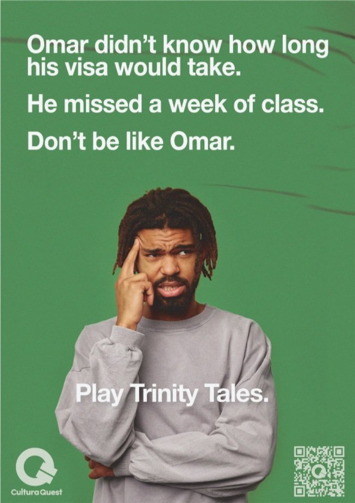
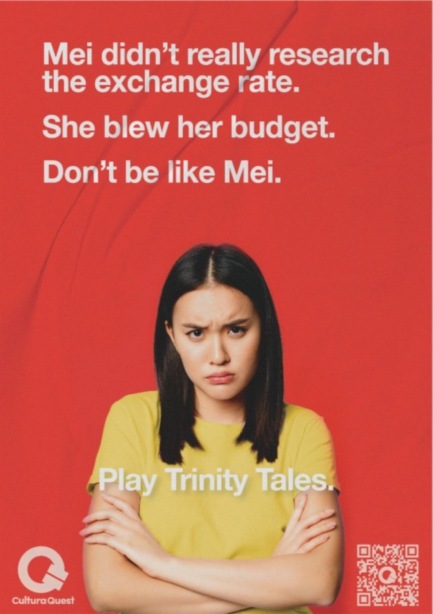
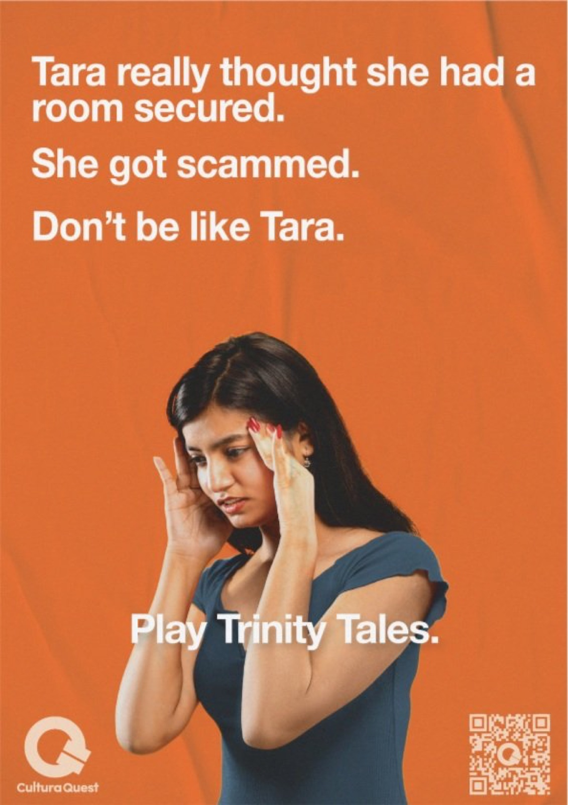
I designed a simple logo incorporating a C and Q together to represent the group name we established: CulturaQuest. I then created eye-catching posters depicting three common pain points found through the prior research that are addressed in the game: fraudulent accommodation listings, visa issues, and adjusting to the Irish cost of living. A promotional video was also made. These materials were displayed around college to garner interest for the day of the course Showcase, in which each student group presented their projects to the public.
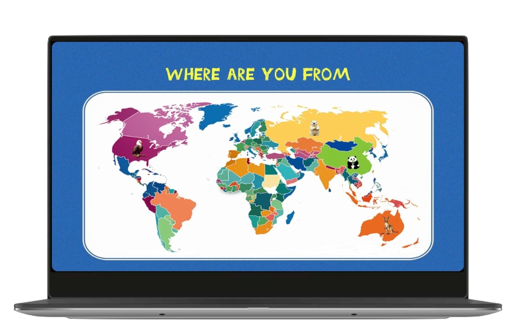
Inside the game
The game starts with the player choosing their country, which changes content of the game such as currency and visa information. The game has a simulation aspect in which players apply for insurance and a visa. By dragging and dropping documents on a simulated desktop, they can get a glimpse of real documents they will need and understand waiting times.
The thrill of receiving an acceptance letter from Trinity College Dublin is felt in the game, leading to an official introduction of the guide Sam the fox. Players will even have to apply for accommodation, while being careful as the game depicts what a scam may look like — providing a real learning experience, as many students get scammed by fraudulent accommodation listings.
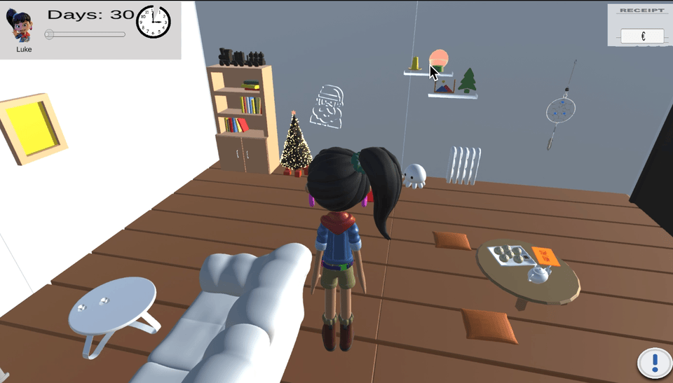
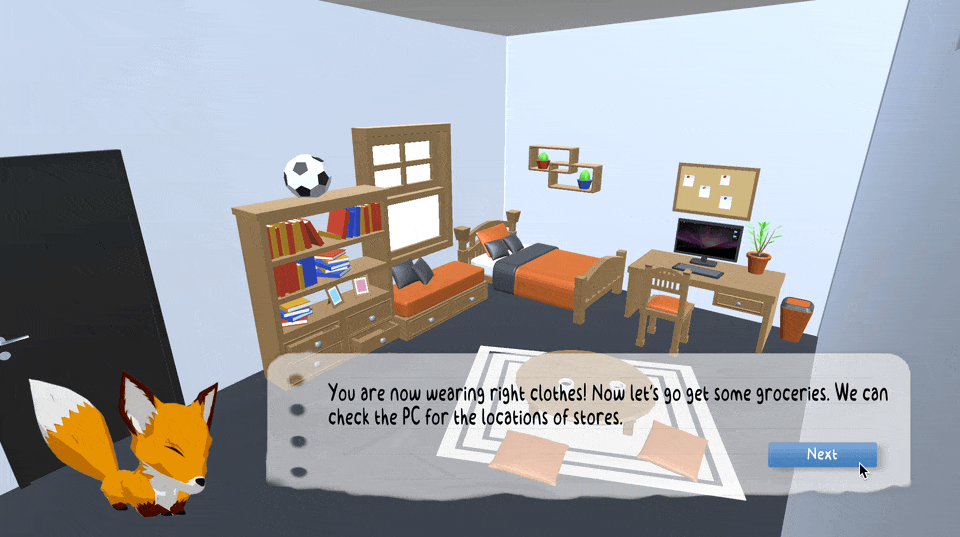
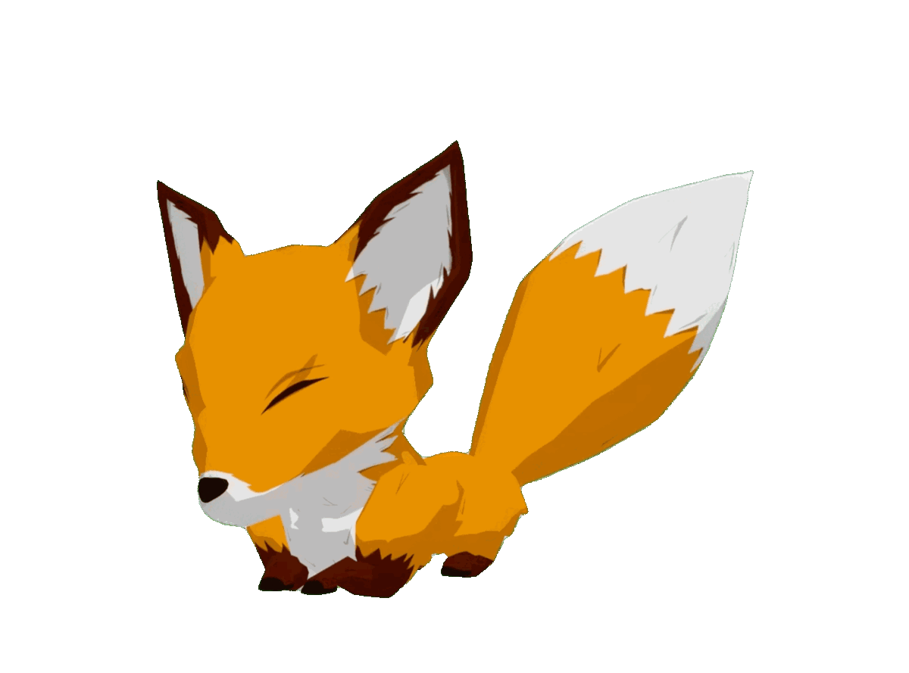
Watch a brief playthrough or try an early demo WebGL/browser version of the game.
Reflection
What I took away
This project presented a unique and rigorous challenge. Being at the forefront with my idea selected, I experienced both the pressure and the opportunity to contribute significantly. We faced significant internal team challenges, with some members less inclined to participate, which underscored the importance of effective team management and conflict resolution.
Mastering Unity, particularly its C# programming aspect, which was not part of our standard curriculum, was a steep learning curve. Advocating for and participating in Unity workshops was instrumental in overcoming this hurdle. The project's execution highlighted areas for improvement, notably the need for a more structured approach and early task distribution to prevent confusion and inefficiency. Limited testing phases, restricted to peer evaluations, revealed the necessity of more extensive and diverse testing scenarios.
Despite these obstacles, the experience was very educational, enhancing my skills in group coordination, rapid skill acquisition, and navigating complex software environments.